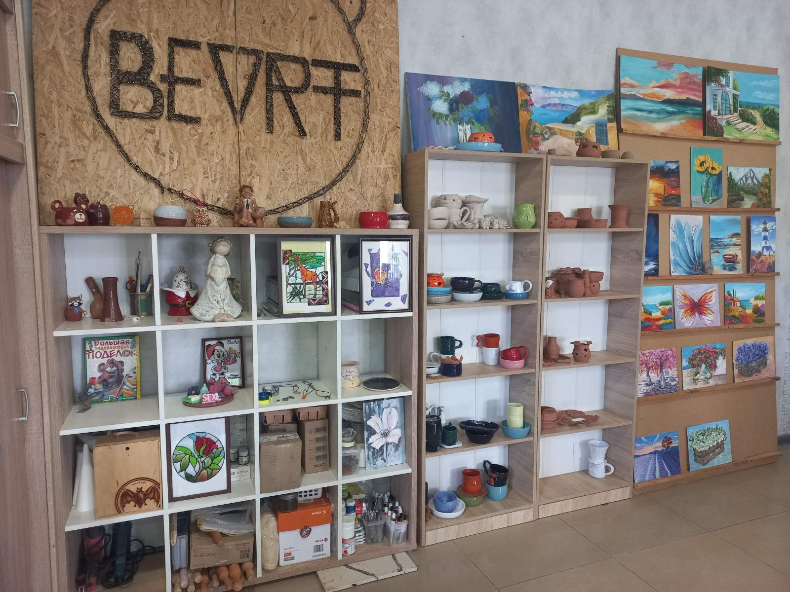
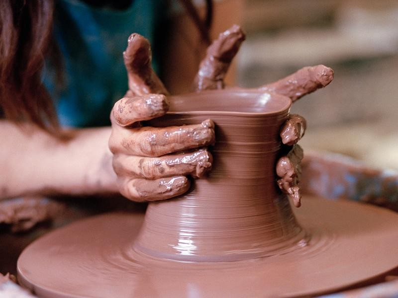
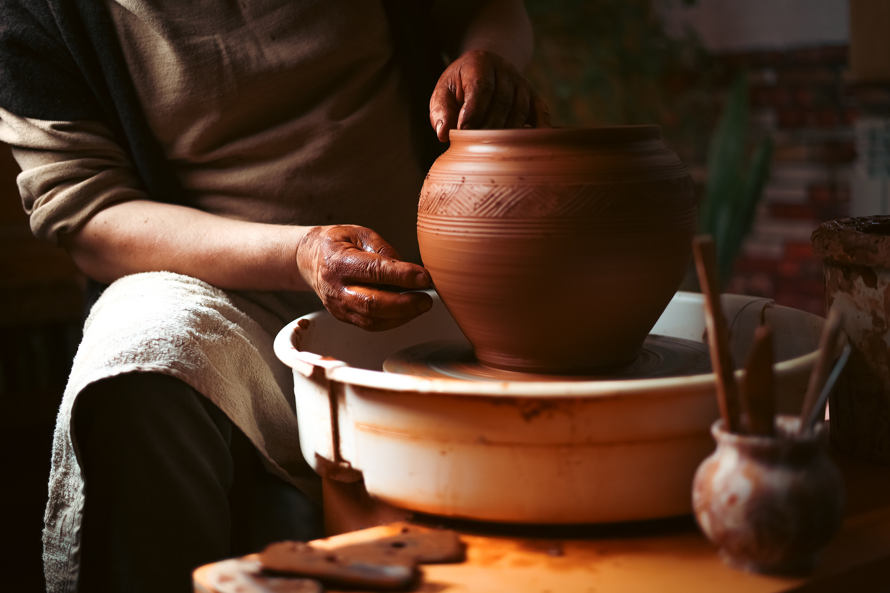
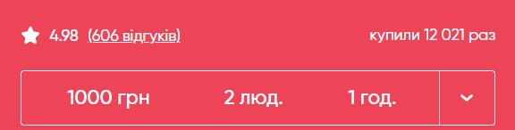
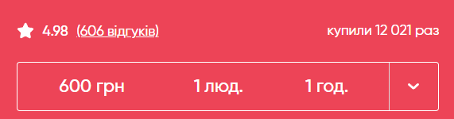

Фотогалерея






Відео-запис майстер-класу
Прайс


Контакти
Номер телефону: +38 (050) 035 00 27
Розташування: м. Харків, ст. м. Левада, просп. Аерокосмічний, 1.
Графік можливих записів:
Понеділок, Середа, П'ятниця: Вихідний
Вівторок, Четвер: 16:00-18:00
Субота, Неділя: 11:00-15:00